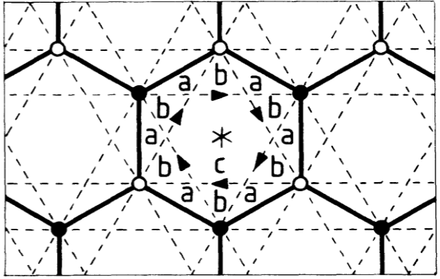
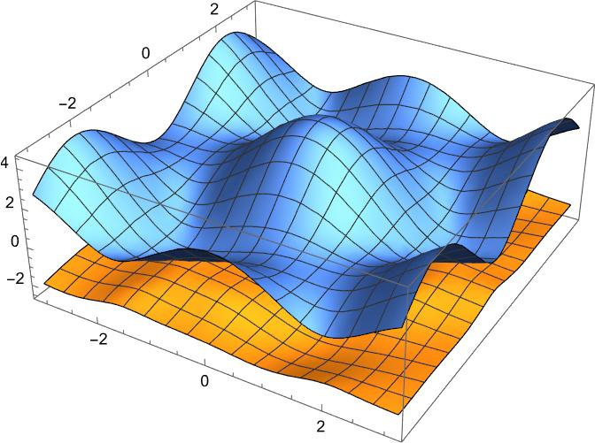

CMP课程论文
1. 标题
Haldane模型与Kane-mele模型的学习和计算
2. 摘要
- 本文研究学习了haldane模型的研究背景、模型原理，并使用mathematica结合课堂知识对haldane模型的体能带、两种边缘态、陈数、贝里曲率进行了计算。
- 本文研究学习了Kane-mele模型的研究背景、模型原理，并使用mathematica结合课堂知识对kane-mele模型的体能带、两种边缘态、陈数、贝里曲率进行了计算。
- 通过本文的研究学习，熟悉了拓扑凝聚态模型的mathematica计算，强化了固体物理、量子力学等知识的记忆和应用。
3. 引言
Haldane模型和Kane-mele模型是入门拓扑凝聚态研究的基础，因此想要进一步研究其他拓扑凝聚态现象，就需要把Haldane模型和Kane-mele模型研究透彻，为以后的研究打好基础。 Haldane模型和Kane-mele模型都是基于单层石墨烯晶格的物理模型。在Haldane模型之前，二维电子系统中的量子霍尔效应常常出现在有外部磁场的情况下。但是Haldane模型通过时间反演对称性破缺展示了一种没有元胞净磁通量的量子霍尔效应产生方法。kane-mele模型主要聚焦于原子的自旋轨道耦合效应对石墨烯晶格产生的影响。在石墨中，层间耦合的强度远大于自旋轨道耦合的强度，因此在石墨中常常忽略自旋轨道耦合对系统产生的影响。但是对于单层石墨烯，没有了层间耦合，自旋轨道耦合产生的影响就会显现出来。
要研究Haldane和Kane-mele模型，就要从哈密顿量入手，求解哈密顿量进而可以得到体能带。对于不同参数的体能带，我们可以看到能隙的打开和关闭【?】【如何判断一个模型有没有边缘态，我怎么就知道这两个模型有边缘态？】 我们观察到haldane模型和kane-mele模型具有边缘态【这个边缘态是怎么解出来的】，我们使用*方法对边缘态进行求解并使用mathematica进行计算，得到了zigzag、armchair的边缘态的能带图。
4. 正文
4.1 Haldane 模型
4.1.1 Haldane 模型基础
Haldane模型的晶格是石墨烯晶格。石墨烯晶格是元胞中有两个原子的六角晶格。

上图中的a，b区域表示Haldane模型对石墨烯晶格的不同区域所加的不同磁场。整个正六边形内部的净磁通量为0，但是a,b区域磁通量不为0.这种交错添加的磁通量导致了电子在不同原子之间跃迁时所会带上不同的相位。如图所示，最近邻跃迁的闭合路径包围了整个晶胞，因此净通量为0。因此所加的磁场对最近邻跃迁矩阵不产生影响。对于次近邻跃迁，其包含了两个a区域和一个b区域，因此t2的矩阵带上了
\phi=2\pi(2\Phi_a+\Phi_b)\Phi_0
的相位。这就意味着【？】
Haldane模型是一个基于石墨烯晶格的紧束缚模型。在之前的研究中，Semenoff的模型考虑了在位能和最近邻跃迁。这个模型中展现出了时间反演不变性。Haldane以Semenoff的模型为基础，考虑了次近邻跃迁的t2项。这个次近邻跃迁项不会改变空间群，但是消除了在原来能带结构中的电子空穴对称性。（可见下图，可以看到t2项确实消除了能带结构的对称性）
此外，Haldane还在晶格中添加了周期性的交错磁场。这个磁场在晶格内部没有净通量，但是在图1中的a,b区域取不同的值。在交错磁场的存在下，最近邻跃迁的闭合环路中净通量为0，因此对t1矩阵没有影响。对于次近邻跃迁，净通量不为0，因此一次次近邻跃迁会带来附加的相位，因此t2的矩阵会受到影响。
下面使用旋量对哈密顿量进行对角化
4.1.2 实空间哈密顿量
Haldane模型的哈密顿量主要分为三部分，交错在位能（质量项）、最近邻跃迁项、次近邻跃迁项。我们分别写出这三项的矩阵形式并将他们整合后写成d矩阵的形式。 交错在位能: \begin{eqnarray} H=M\sum_i \xi_i c_i^{\dagger} c_i \end{eqnarray}
最近邻跃迁：
次近邻跃迁：
(2.3)中的\phi代表着交错磁场带来的相位。t_1和t_2代表跃迁强度。
4.1.3 傅里叶变换
由于在动量空间便于计算，我们使用傅里叶变换将实空间的哈密顿量转换为动量空间的哈密顿量。
4.1.4 矩阵形式哈密顿量
为了便于计算，我们引入旋量，将哈密顿量写成矩阵的形式：
4.1.5 Haldane模型求解
在写出动量空间的矩阵形式哈密顿量之后，我们可以通过求解矩阵的本征值和本征向量，就可以得到Haldane模型的能带。
在mathematica中使用本征值求解函数， 
我们也可以得到在不同位置的二维能带图
4.2 Kane-mele 模型
Kane-mele模型是在紧束缚模型基础上考虑自旋轨道耦合效应得到的模型。同样是基于石墨烯晶格，kane-mele模型不要求晶格内交错磁场。由于单层石墨烯没有了层间耦合，因此相对于层间耦合很弱的自旋轨道耦合就会表现出来，从而在石墨烯晶格中表现出拓扑特征。
4.2.1 Kane-mele 模型基础
4.2.2 实空间哈密顿量
4.2.3 傅里叶变换
4.2.4 矩阵形式哈密顿量
5. 结论
haldane模型和kane-mele模型都具有zigzag和armchair边缘态。
6. 参考文献
[1] Haldane, F. D. M.,Model for a Quantum Hall Effect without Landau Levels: Condensed-Matter Realization of the “Parity Anomaly.”,Physical Review Letters,1988,61(18)
[2] Kane, C. L., \& Mele, E. J.,Quantum Spin Hall effect in graphene,Physical Review Letters,95(22).